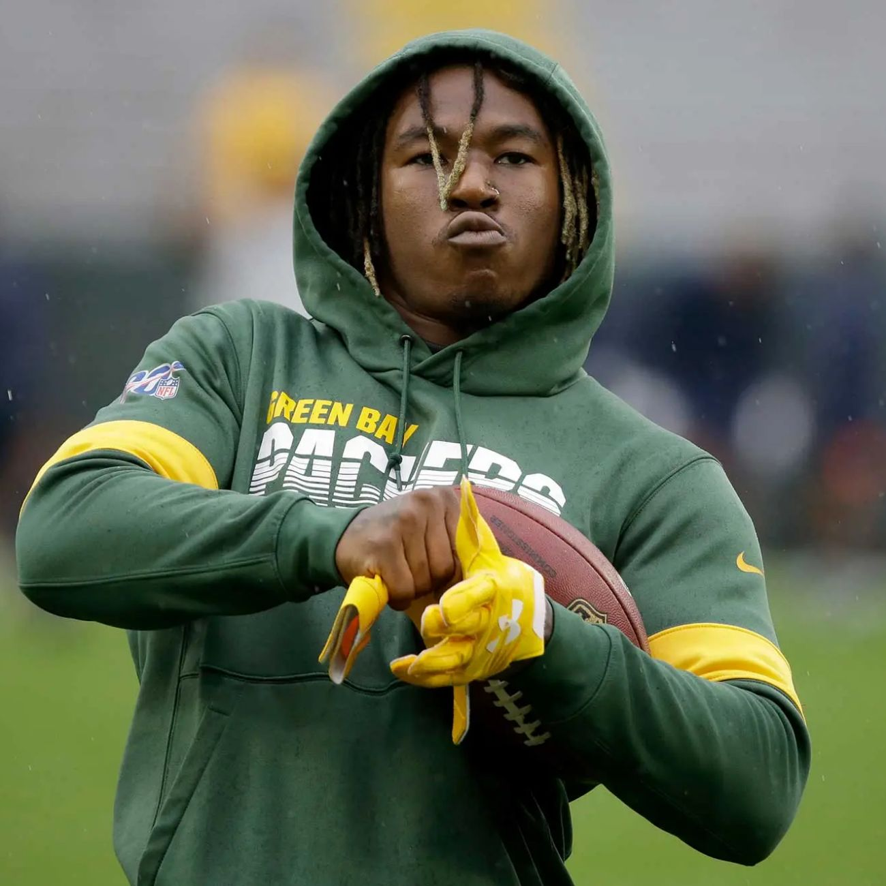
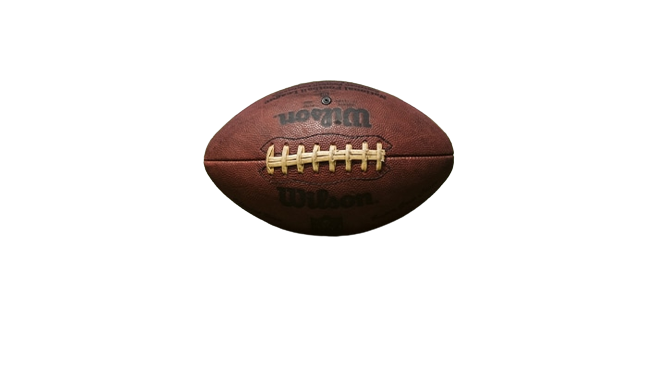

L'une de mes grandes passion est le football américain. Mon équipe préféré sont les Green Bay packers, portant les couleurs de l'or avec du vert. Cette équipe représente le Wisconsin. Etant Texan, beaucoup se demande pourquoi je soutient cette équipe, et non une équipe Texane, comme les Texans de Houston ou alors les Colts. Je soutient également les colts de Dallas, évidemment, mais les Packers de Green Bay sont ceux qui m'ont introduit à ce sport. Lorsque j'ai découvert le football américain, mon joueur préféré était un Packers, il s'agit de Jamaal Williams (Aujourd'hui joue pour les Lions de Détroit).

Jamaal Williams respire la joie et la bonne humeur. Avant chaque match, il danse à l'échauffement, aux interviews, il est drôle et aimable. Ce joueur dispose vraiment de cette mentalité conviviale et chaleureuse qu'on trouve dans ce sport. Une équipe de foot est soudée, prête à tout pour terasser son adversaire, et honnorer son université, sa ville. La vidéo ci-dessous est un parfait exemple de cette ambiance familiale mais aussi guerrière dans une équipe.
Dans cette vidéo, ils chantent en choeur "We ready for y'all", autrement dit, nous sommes prêts pour vous. Cette phrase peut être interprétée de deux façons: Un message menaçant pour l'équipe adverse, mais une promesse pour les supporter de leur équipe. Ce qui est beau dans ce chant, c'est qu'il est à la fois motivant, on voit que l'équipe est soudée et déterminée à remporter la victoire, mais il fait également office de fanfare pour impressionner et montrer qu'ils ne sont pas à prendre à la légère. Il suffit juste d'imaginer la pression que doit ressentir l'équipe dans les vestiaires d'à côter, une véritable intimidation avant le match.

Voici donc ma passion, et pourquoi je l'aime tant. L'aspect guerrier et féroce, la dur volonté de gagner en équipe, pour rendre fier ce que l'on représente. C'est aussi un sport convivial, qui se joue en famille, ou avec des amis. Un sport qui a su réunir des foules devant un match, depuis plusieurs générations, un sport qui rassemble.